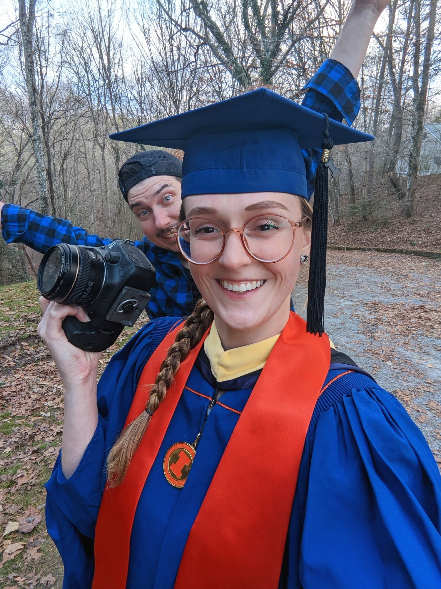
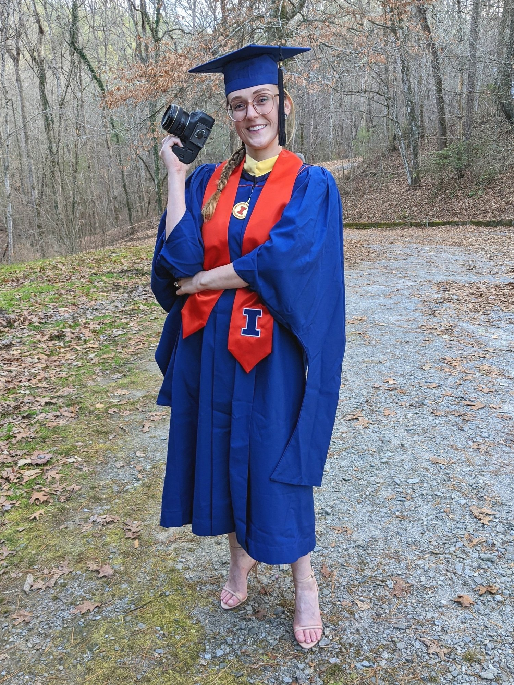

A graduation announcement!
I swore I’d never get a graduate degree when I finished my undergraduate degree because I “knew I couldn’t handle it,” but here we are!! Introducing the new University of Illinois at Urbana-Champaign alumnus (that’s me) with a M.S. Food Science & Human Nutrition. Commence Christmas card-like summary.


To be fair, my undergraduate degree in Biochemistry at Georgia Tech was the hardest thing I had done at that point, so I can see why I’d be put off of school for a while haha. 5 years later and I discovered the wonderful world of *food science*…and then I couldn’t take my mind away from it. Shortly after that I discovered the University of Illinois at Urbana-Champaign online master’s program, the fact that they’ve been refining the program for over 10 years, and how it’s synchronous (meaning that students + professor meet live online on a schedule each semester). After dwelling on it, I decided to take the leap, commit to the 3 years of the work, and pursue this passion of mine!
At the time of starting my program, I was working at the Centers of Disease Control as an Analytical Chemist. I’d started working there when I finished my undergraduate degree, and moved within the branch to roles with more responsibility as time went on. Since graduating undergraduate school, I was also pursuing my “passion projects”…what started as a hobby of running an Instagram…turned into running a blog…turned into publishing a cookbook…turned into doing food photography and recipe development for clients. So, starting the master’s degree in Food Science & Human Nutrition, for me, was a means to get the education & understanding in order to pull everything together better & faster than I could ever do on my own.
And BOY did I not really know what it would mean for me!!
Now, at the other end of the degree 3 years later, I see that it provided me so much more than just textbook information. It has provided me with strength, fortitude, confidence, and resolve. I believe that it was a challenge that I needed to go through, and I am so grateful for it. The program was by no means easy, and I highly recommend the program for others interested. I cannot speak highly enough of the program director and fellow professors, as they set you up to succeed if you’re willing to meet them halfway. I really didn’t know what to expect going into the program (online programs were not as typical then!). It exceeded my expectation because of how well coordinated the program was.
Today I am full-time self-employed and the story goes on. It feels like one big, constantly evolving project, trying to find where my skills & interests meet in order to provide something great to the world. For now that is creating hand-crafted french macarons for others while continuing my recipe development, food photography & videography projects for clients. Something about this right now feels balanced for me to where I can utilize my education, photography, and creativity together, and I love it!
We’ll see what happens by this time next year :)
Sweet regards,
Kim